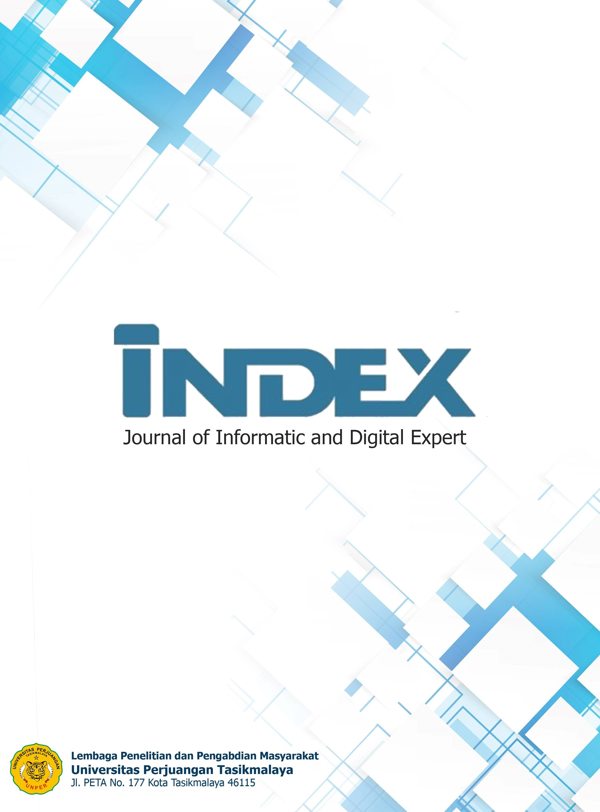

UNIVERSITAS PERJUANGAN TASIKMALAYA


Unit Kegiatan Mahasiswa (UKM)
Unit Kegiatan Mahasiswa (UKM) Universitas Perjuangan Tasikmalaya merupakan wadah kegiatan mahasiswa di luar bidang akademik untuk mengembangkan minat, bakat, serta potensi diri di berbagai bidang.
Tujuan UKM
- Mengembangkan potensi dan bakat mahasiswa di bidang seni, olahraga, dan keilmuan.
- Meningkatkan solidaritas dan kerja sama antar mahasiswa lintas fakultas.
- Menjadi sarana pengembangan karakter mahasiswa yang aktif, kreatif, dan berprestasi.
Daftar UKM di Universitas Perjuangan Tasikmalaya
| No | Nama UKM | Bidang |
|---|---|---|
| 1 | UKM Seni dan Budaya | Kesenian |
| 2 | UKM Olahraga | Olahraga & Kesehatan |
| 3 | UKM Pramuka | Kepemimpinan & Kepramukaan |
| 4 | UKM Kewirausahaan | Bisnis & Inovasi |
| 5 | UKM Pecinta Alam | Lingkungan & Petualangan |
| 6 | UKM Bahasa Inggris | Bahasa & Komunikasi |
Kegiatan Rutin UKM
Setiap UKM memiliki kegiatan rutin yang diadakan setiap semester, seperti pelatihan, lomba, seminar, dan kegiatan sosial masyarakat. UKM menjadi bagian penting dalam membentuk karakter mahasiswa Universitas Perjuangan Tasikmalaya agar lebih aktif dan berkontribusi untuk lingkungan sekitar.
Copyright 2025 © Fahri Ahmad S